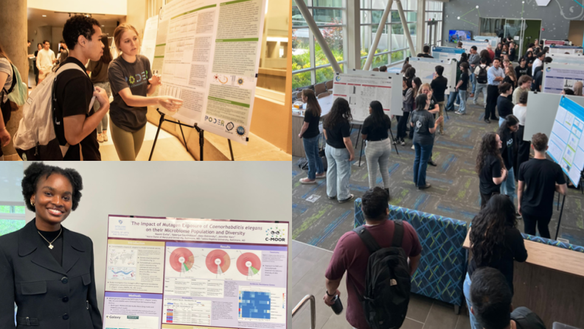

Chapter 8 Scientific Posters
In this section we will go over how to create a scientific poster. We chose a poster as our final deliverable in C-MOOR because they:
Facilitate participation in research symposiums: Students can use their poster to apply to present at research symposiums or conferences with minimal additional effort beyond what they do in class. If your institution does not have a research day, consider starting one using these posters as a foundation as we did at Clovis Community College! Your school’s library is another great point of contact in getting a poster session or research day set up. Some of the events students have participated in using their C-MOOR projects include:
- The Clovis Community College Research Day
- The Notre Dame of Maryland University Research Day
- The GRADS-4C Conference (2025)

Serve as a physical representation of student achievement: If printed, once finished with the class, students can choose to take their poster with them or leave it with the class to be hung up around the classroom or the hallways. This gives their research project more visibility, serves as an advertisement for other students who might be interested in taking the class, and showcases what students have accomplished.
Can easily be shared digitally: A presentation can’t be repeated twice without a recording, and each recording can take up a lot of digital storage. A poster on the other hand, is a great compressed product that can be posted on a student’s (or the institution’s) social media and help get their work seen by others. Posters are even small enough that they can be attached to an email and sent to prospective supervisors and collaborators interested in a quick summary of their work. See our Look at This! category on the C-MOOR Academy Discussion Forum to see all the posters students have created and shared so far!
Posters can be used to measure student achievement and understanding: We have previously used these posters to evaluate student learning, even years after students have left the classroom. Check out our poster on posters!